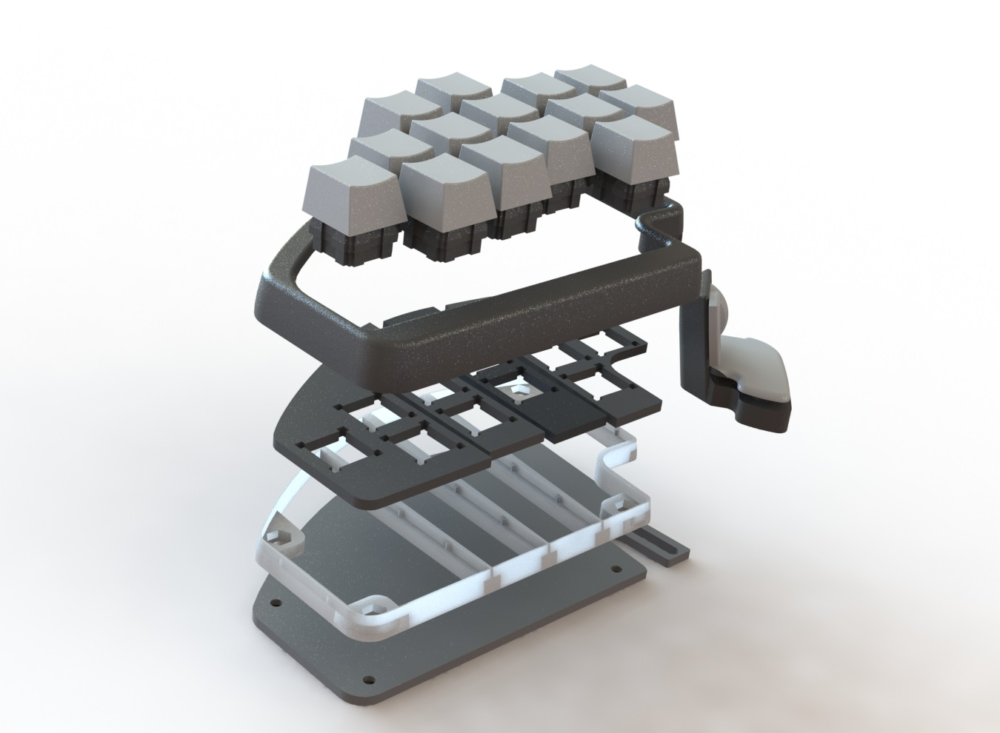
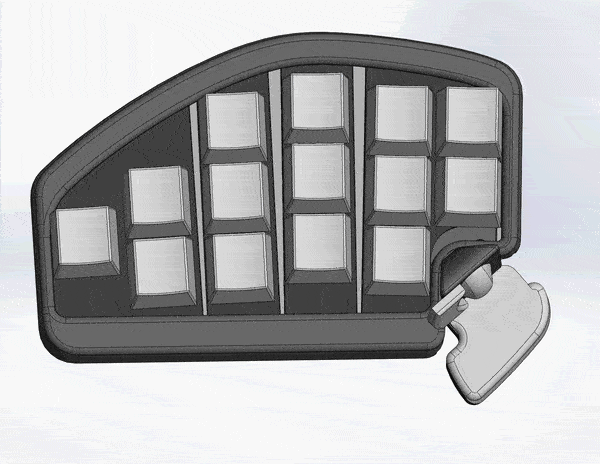
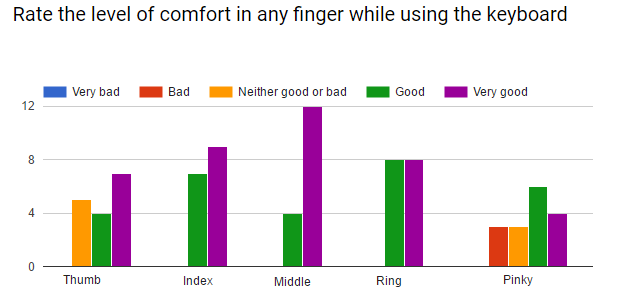
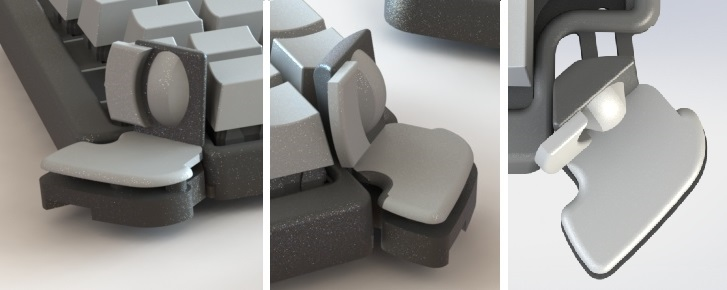
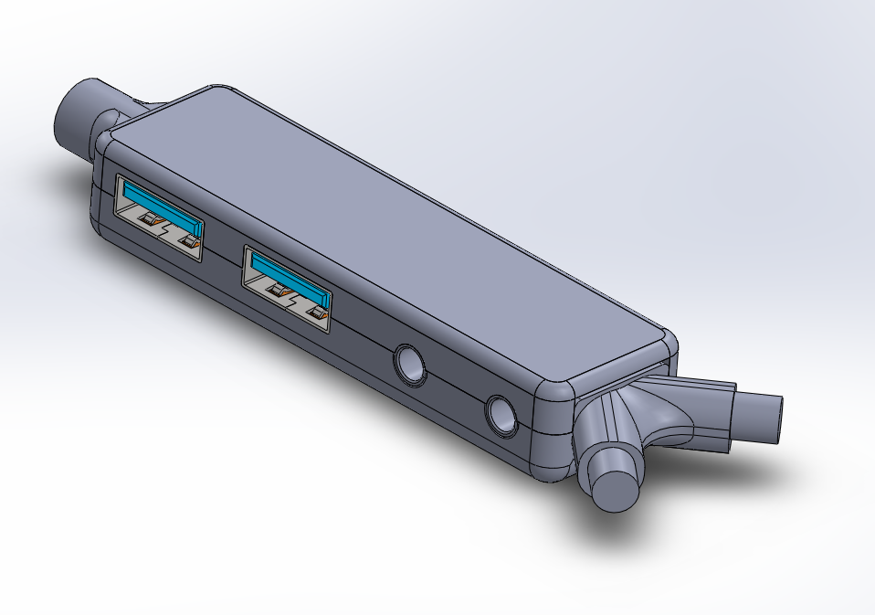
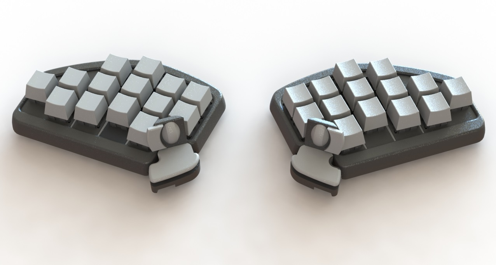

Shortcut V6
The closed beta has opened our eyes in regards to how bad our testers onboarding process was and how many barriers they had to overcome before they could start using the keyboard.
It’s also been useful for us to spot our design mistakes or poor choices. In some cases we’ve gone back to features that we dropped 4 months ago, in others we’ve improved our previous design and in another we’ve directly invented a cool feature.
We’ve been developing the Shortcut V6 during the last two weeks. These are the planned upgrades and the reasons behind them:
1. Smaller size
Something that we've always aimed for is making the Shortcut thinner. This is because the thinner it is, the less palm support height is needed, making it more comfortable to use in more scenarios (using chair armrest, the table to rest the arms, not resting the arms, different height tables, etc)

The mechanical switches limit how thin it can be and right now we are close to the limit where the switches nearly touch the bottom plate. The V6 is approximately 6 mm thinner than the V5 (doesn’t seem much, but it’s a huge difference) so we don’t need the palm rest height to be adjustable, we can design a thinner palm rest that fits all scenarios. All the ergonomic tests we've done point to an overall increase in comfort.
2. Adjustable columns

One of the main things we wanted to validate with the closed beta was if the adjustable columns were needed. V3 had them but we decided to remove them and try to create a few hand sizes that fitted them all. We created a software to analyzing our testers hand size and shape, but we weren’t able to achieve a high enough comfort. Some testers reported discomfort, especially with the pinky.

The complication of adjustable columns is that we can't use a regular PCBs, we will need to use Flex PCBs. This makes prototyping more difficult because it’s more expensive to fabricate and we can’t do it inhouse. For the first functional prototype we will simulate the Flex PCB with cables, connectors and a normal PCB.
3. Thumb cluster changes
The pinky was the least comfortable finger, the thumb was the second one. We consider that this has mostly to do with how we use the thumbs in a regular keyboard, we just mash the spacebar. With the Shortcut we move it in four directions and that’s something that requires adaptation and practice. The reason of the modification is to reduce that adaptation period, changing from two 4-way switches to one 4-way and two buttons.

Although having 8 buttons for thumb is really cool, that both sticks have the same shape and work in the same way increases confusion. By having 3 buttons with different shapes and locations we will make it easier to get used to the thumb clusters.
4. The Huble
The Huble is a USB Hub integrated in a "Y" shape cable that connects each side of the Shortcut between themselves and the PC. It contains mic and headphones jacks, 2 USBs and the Atmega23u4 (the chip that controls the Shortcut). Why have all this components outside of the keyboard instead of inside?

Having the chip outside means that any side of the keyboard can be unplugged and the other side will always work. It also allow us to upgrade the chip of the Shortcut without changing the keyboard itself. If in the future we want a more powerful chip it would be really easy for us and cheap for customers to upgrade their Shortcut.
The Huble is also the single cable that connects both sides of the keyboard and the computer. The cable that has Y shape and ends in 3 connectors, the hub will be in the middle of the Y and the short cables will connect each side of the keyboard. To keep your desk clear, when you disconnect one side of the Shortcut, we will have a simple joining system, that keeps both ends of the Y together.
5. Hot swappable switches
This is something that the gaming industry hasn’t adopted but keyboard enthusiasts value highly, the ability to swap your switches on the spot. It’s as easy as changing a keycap. This means that you could have a set of Cherry MX red and blue switches and change them whenever you want.
6. Aluminium top and LEDs under switches
With the V6 we want to get closer to how the product will feel and look so the top plate (the adjustable columns) will be made from aluminium. This means that we need to rearrange the LEDs and place them under the keys.
We’ve been running some tests but until we don’t have a fully assembled prototype we won’t know how the light diffuses:

Although it’s a bit optimistic, we aim to have a working prototype for the end of the week. It will still need a lot of work but it will be good enough to show it to people and test.
 6 without palm rest.